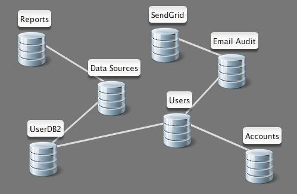

Data Sources
Table of Contents
- How do I upload a CSV or Excel file?
- How do I connect to a Google Spreadsheet?
- How do I connect to Basecamp?
- How do I connect to Highrise?
- How do I connect to Google Analytics?
- How do I connect to Salesforce?
- How do I connect to Sendgrid?
- How do I connect to Pivotal Tracker?
- How do I connect to Cloudwatch?
- How do I connect to Freshbooks?
- How do I pull data from MySQL, SQL Server, or Oracle?
- How do I combine data sources?
- How do I use lookup tables?
- How do I administer a data source?
- How do I schedule a data source to automatically refresh?
How do I upload a CSV or Excel file?
Navigate to the Connections page of Easy Insight. Click on the Upload Excel or CSV button. Click on Upload a Spreadsheet, choose the file from your hard drive, and click Upload. Supported files are:
- Excel 1997-2008
- Comma Separated Values
- Tab Separated Values
- Pipe Separated Values
Once uploaded, you'll go through a wizard to name the data source and configure the discovered fields.
How do I connect to a Google Spreadsheet?
Navigate to the Connections page of Easy Insight. Click on the Google Spreadsheets button. Click Get Started Now. If this is the first time you've connected to Google, you'll be redirected to Google to authorize Easy Insight to access your documents. Grant access and you'll be redirected back to Easy Insight. The system will retrieve the set of available spreadsheets in your Google Docs account, which may take a minute. From the returned tree, you can choose a particular worksheet for the data source. Once you choose a worksheet, you'll go through a wizard to name the new data source and configure the discovered fields.
How do I connect to Basecamp?
First, you'll need to enable API access to your Basecamp account. You can enable this access from the Account (Upgrade/Invoice) page of your Basecamp account. If this option is unavailable, you may need to contact your Basecamp administrator.
Once that's done, navigate to the Connections page of Easy Insight. Click on the Basecamp button, then click Get Started Now. You'll be prompted for your Basecamp path and your API token. You can find your API token under the My Info page on your Basecamp interface. Once you click Create, Easy Insight will begin synchronizing key aggregate data from your Basecamp account into the Easy Insight data warehouse. Depending on the size of your Basecamp instance, this process may take a while--if you have hundreds of projects and thousands of todo items, it might be several minutes to copy all of the necessary data across. Once synchronization is complete, a wizard will walk you through an initial scorecard and next steps with the data source.
How do I connect to Highrise?
Detailed documentation for connecting to Highrise is available at http://www.easy-insight.com/documentation/highrise.html.
How do I connect to Google Analytics?
Navigate to the Connections page of Easy Insight. Click on the Google Analytics button. Click Get Started Now. If this is the first time you've connecte to Google Analytics, you'll be redirected to Google to authorize Easy Insight to access your analytics data. Grant access and you'll be redirected back to Easy Insight. Click Connect and after a moment you'll be presented with an initial scorecard of web analytics data. From here, a wizard will walk you through next steps with the data source.
How do I connect to Salesforce?
At the moment, the Easy Insight connection to Salesforce requires an Enterprise or higher account with Salesforce. Navigate to the Connections page of Easy Insight. Click on the Salesforce button. Click on Get Started Now and fill in your Salesforce.com user name, password, and security token value. After a moment you'll be presented with an initial scorecard of your CRM data. From here, a wizard will walk you through next steps with the data source.
How do I connect to Sendgrid?
Navigate to the Connections page of Easy Insight. Click on the Sendgrid button. Click Get Started Now. Fill in your user name (email address) and password for your Sendgrid account. After a moment you'll be presented with an initial scorecard of your email delivery data. From here, a wizard will walk you through next steps with the data source.
How do I connect to Pivotal Tracker?
Navigate to the Connections page of Easy Insight. Click on the Pivotal Tracker button. Click Get Started Now and fill in your user name and password for your Pivotal Tracker account. Once you click Create, Easy Insight will begin synchronizing key aggregate data from your Pivotal Tracker account into the Easy Insight data warehouse. Depending on the size of your Pivotal Tracker instance, this process may take a while--if you have hundreds of iterations and thousands of stories, it might be several minutes to copy all of the necessary data across. Once synchronization is complete, a wizard will walk you through an initial scorecard and next steps with the data source.
How do I connect to Cloudwatch?
Navigate to the Connections page of Easy Insight. Click on the Cloudwatch button. Click Get Started now. Fill in your Amazon Web Services key and secret key. After a moment you'll be presented with an initial scorecard of your EC2 infrastructure data. From here, a wizard will walk you through next steps with the data source.
How do I connect to Freshbooks?
Navigate to the Connections page of Easy Insight. Click on the Freshbooks button. Click Get Started now. You'll be prompted for your Freshbooks path. Click Authorize Easy Insight Access and you'll be redirected to Freshbooks. Log in, grant access to Easy Insight, then copy the verifier value shown. Return to the Easy Insight connection page and paste that verifier value into the provided input. Click Create to actually create the connection to Freshbooks.
How do I pull data from MySQL, SQL Server, or Oracle?
Detailed documentation for these connections is available at http://www.easy-insight.com/documentation/database.html.
How do I combine data sources?
Easy Insight provides you with the capability to combine any data sources. The key is that you need some common field between the data sources which Easy Insight can use to join the data sources. For example, you could join Basecamp and Highrise data by connecting Responsible Party from Basecamp with Deal Owner from Highrise to create a dashboard of unified todo items and deal data by owner.
When you combine data sources, you'll create a new data source which represents the federation of those joined data sources. This new data source is referred to as a Composite Data Source. Navigate to the My Data page of Easy Insight. Click on Combine Sources. This action opens up a new screen with a list of available data sources down the left and a canvas to the right. You can drag drata sources from the left list into the canvas to add them to the composite data source. Once added, you can join data sources by selecting two, right clicking on one, and clicking Create Join. You'll be prompted to choose the two fields for the join. You can right click on the line between the data sources to test the join and make sure it seems valid--if none of the rows match between the two data sources, it's a problem. You can also delete joins from that right click context menu. In the screenshot to the left, you see a sample composite data source from our internal Easy Insight data which combines data from our Reports, Data Sources, Users, Accounts, and Sendgrid data sources, along with a couple of data sources which simply act as join tables.
How do I use lookup tables?
You can add custom fields to any data source in Easy Insight through the use of a lookup table. For example, you can add Billable Rate to your time tracking data from Basecamp to create a real time calculator on your billing amounts for the month or tie different link sources in Google Analytics to categories to better segment your visitor traffic data.
Navigate to the My Data page and click on the Lookup Table button. You'll be prompted to choose a data source, an existing field, the name of the new field, and the type of the new field. For example, to do the above Billable Rate example, you could choose Basecamp as the data source, Person Name as the source grouping, Billable Rate as the new field name, and Measure as the new field type.
Once you've set these initial parameters, you'll enter a new screen with a list down the left side of the screen of all distinct values of the source grouping. At this poiny, you can go through and fill in the matching lookup values for each grouping. Once you save the lookup table, this new field becomes available to reports just as any other field which is intrinsically part of the data source.
How do I administer a data source?
Navigate to the My Data page and click on the Administer Data Source icon to the far right of the data source name. From here, you can alter or add custom fields to a data source just as you do with new fields in the report editor. For more information on these available operations, see the report editor documentation.
How do I schedule a data source to automatically refresh?
Since Basecamp, Highrise, and Pivotal Tracker synchronize data into Easy Insight to provide quick ad hoc reports, you may find it helpful to set up an automatic refresh of the data source. You can schedule automatic data source refresh by going to My Data, clicking on Scheduling, and defining a new data source refresh. To minimize server impact, your account is limited to one refresh of each data source type--i.e. if you have multiple Basecamp data sources, you may only automatically refresh one. Available refresh intervals are Daily, Weekdays (Monday -> Friday, sorry, no business calendars yet), Monday/Wednesday/Friday, Tuesday/Thursday, Day of Week, and Day of Month. We encourage you to choose the minimal refresh interval for your reporting needs--depending on use of this functionality, we may have to gradually enforce additional throttling to ensure we don't present an adverse server load to the target servers. Refresh times are defined in terms of your locale time zone, so if your computer is running in Eastern Standard Time, you will define the refresh in terms of Eastern Standard Time. Times are presented on a 24 hour clock.